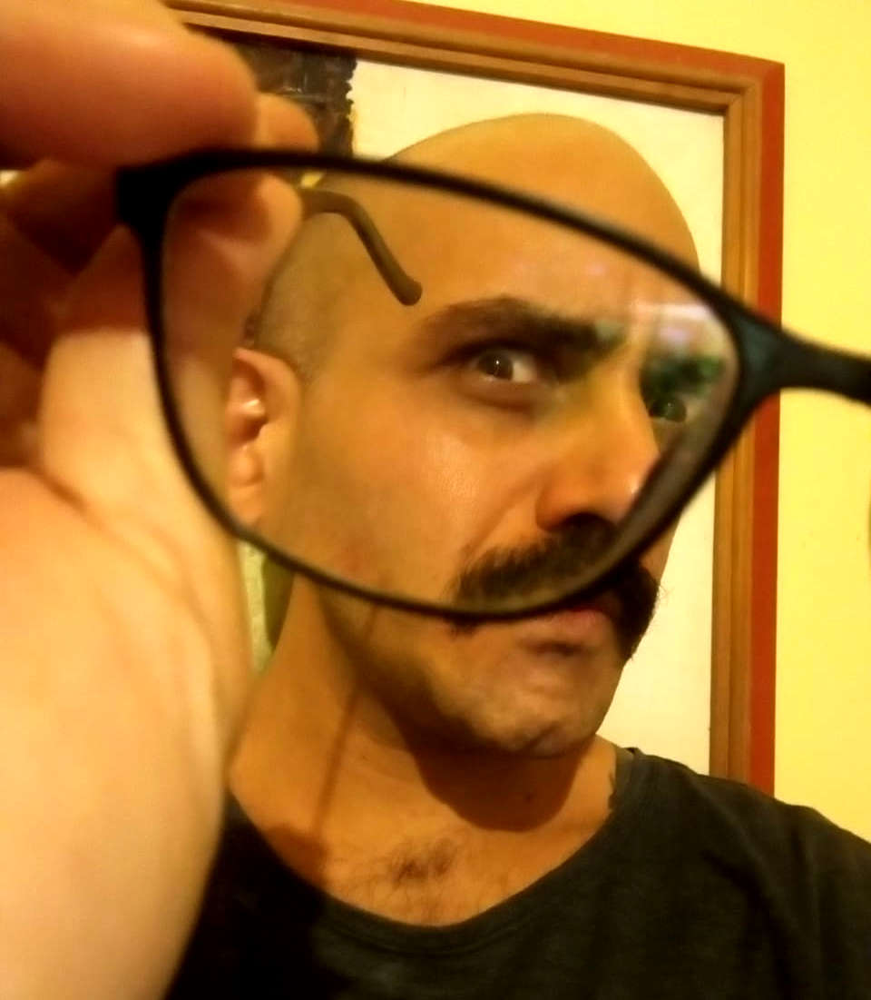

Portfólio de
Renato Pereira Feitosa

Índice:
Sobre mim:
-
Desenvolvedor web ampliando seus conhecimentos sobre front-end e back-end na
 .
.
-
Nasci e cresci em São Paulo-SP. Atualmente, vivo em Recife-PE - mas me considero olindense de 💓.
-
Bacharel em Ciências Sociais pela Universidade Federal de Pernambuco.
-
Acumulei experiências profissionais com pesquisa social, educação de jovens e adolescentes e na incidência por direitos humanos - principalmente, nas áreas de:
-
direito à comunicação;
-
participação social;
-
direitos da primeira infância;
-
transparência pública;
-
e acesso à informação.
Habilidades:
- Python
- Django
- JavaScript
- Servidores web
- Linux
- CSS & HTML
Alguns links que recomendo: